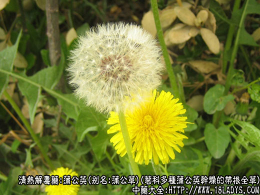
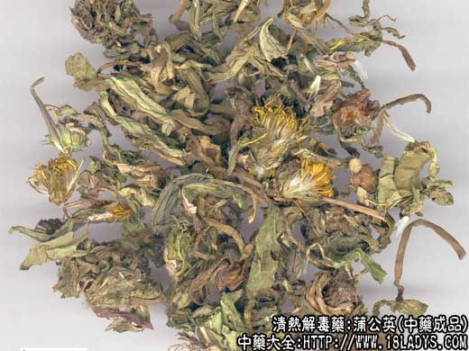
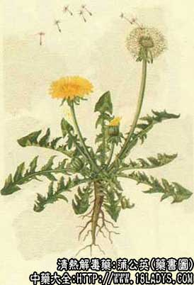

蒲公英为常用中药，始载《唐本草》。
别名：蒲公草、食用蒲公英、尿床草、西洋蒲公英。
来源：为菊科植物，多种蒲公英干燥的带根全草。
植物形态：多年生草本，高10～25厘米，全株含白色浮汁，根深长，单一或分枝。叶根基丛生，排列丛生，排列呈莲座状，向四周散开，叶片倒披针形，边缘有大小不等的缺刻，倒向羽状深裂，裂片三角形。花葶3～5个自叶基部生出，中空，紫红色，头状花序顶生，花冠黄色，瘦果冠毛白色。
产地：全国各地均有生产，野生。
性状鉴别：根略呈圆锥状，弯曲，长4～10厘米，根头部直径3～7毫米。表面紫棕色或棕色，有不规则纵皱。质脆易折断。叶基生，多数卷曲，皱缩或已破碎，表面灰绿色，有时有不完整的头状花序，偶有长椭圆的瘦果。气微弱，味为微苦。
以叶色灰绿，茎短，有花序者为佳。
主要成分：根含结晶性味质蒲公英苦素、蒲公英甾醇、天门冬素等。
药理作用：1、抗菌。对金黄色葡萄环菌和皮肤真菌有抑菌作用。
2、健胃。
3、轻泻。
炮制：切段生用。
性味：甘、苦、寒。
归经：入脾、胃、肾三经。
功能：清热解毒，消痈散结。
主治：乳痈、疔毒及一切痈肿疮毒。
临床应用：为治疗乳痈（急性乳房炎）、肠痈（急性阑尾炎）的重要药物。
1、治乳痈，适用于早期局部红肿坚实，脓肿尚未形成，配银花、连翘、炒山甲等，方如乳痈汤。外用以鲜蒲公英捣烂，加入少许白糖后局部外敷。
2、治肠痈，适用于气滞血瘀，热毒较盛的急性阑尾炎，在中西医结合治疗中（不动手术），以蒲公英配大黄、丹皮、银花等，方如阑尾清化汤。
3、治急性黄疸型肝炎，转氨酶高，可配茵陈、土茯苓、白茅根等，方如蒲茵汤，初步观察对降低转氨酶有一定作用。
4、作为一般消炎解毒药，蒲公英可用疖疮、上呼吸道炎、扁桃体炎、轻度化脓性感染，可单味用30～60g煎水，临服时加一匙白酒冲服，消肿去毒更速度；或配紫花地丁等。
5、治急性结膜炎、脸缘炎等，可用单味蒲公英煎汤熏眼（配菊花、夏枯草更好）。
用量：常用15～30g，大剂可用到60g。
处方举例：1、乳痈汤：蒲公英30g，银花30g，炒山甲9g，连翘12g，天花粉12g，青皮6g，柴胡9g，生甘草6g，水煎服。
2、阑尾清化汤（天津市南开医院）：蒲公英30g，银花30g，大黄15g，丹皮15g，川楝子9g，赤芍12g，桃仁9g，生甘草9g，水煎服。
3、蒲茵汤：蒲公英15g、茵陈15g、土茯苓15g、白茅根15g、田基黄15g，水煎服。
注：市售蒲公英种类很多，主要有蒲公英属下列五种：1、蒲公英。2、碱地蒲公英。3、异苞蒲公英。4、热河蒲公英。5、红梗蒲公英。它们之间仅在花葶的长短，叶片锯齿形状，外层总苞片，内层总苞片，瘦果等方面有异。但在商品上，不易区分，均混合药用。此外还有角状蒲公英，白花蒲公英、东北蒲公英、亚洲蒲公英......药用也很普遍。